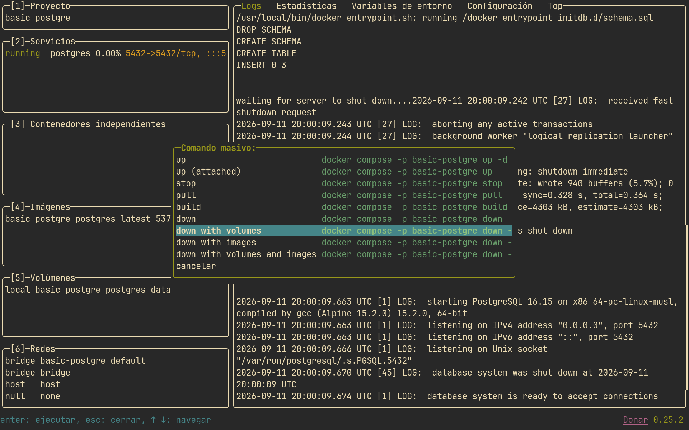

Entorno PostgreSQL
Vamos a crear un entorno de postgresql utilizando Docker.
Estructura
Prepararemos el siguiente entorno:
data/schema.sql
Un schema de inicialización de prueba:
DROP SCHEMA public CASCADE;
CREATE SCHEMA public;
CREATE TABLE usuarios (
id INT GENERATED ALWAYS AS IDENTITY PRIMARY KEY,
name VARCHAR(25) NOT NULL UNIQUE,
email VARCHAR(25) NOT NULL UNIQUE,
created_at TIMESTAMP DEFAULT CURRENT_TIMESTAMP
);
INSERT INTO usuarios (name, email) VALUES
('admin', 'admin@gmail.com'),
('user0', 'user0@gmail.com');
Dockerfile
Muy sencillo:
Instalar pgcli dentro del propio contenedor es opcional, pero lo necesitarás ahi o en tu sistema operativo para acceder con un cli decente
docker-compose.yml
services:
postgres:
build: .
container_name: postgres_db
restart: unless-stopped
environment:
POSTGRES_USER: admin
POSTGRES_PASSWORD: admin
POSTGRES_DB: mydb
ports:
- "5432:5432"
volumes:
- postgres_data:/var/lib/postgresql/data # volumen de persistencia
- ./data:/data # binding
- ./data/schema.sql:/docker-entrypoint-initdb.d/schema.sql #entrypoint
volumes:
postgres_data:
En este entorno hemos cambiado el cómo mandamos nuestro schema.sql al contenedor. En lugar de copiarlo dentro de la imagen con COPY (como hacíamos en el Dockerfile de MySQL), lo montamos como un volumen. Veamos las diferencias entre ambos enfoques.
Schema en el Dockerfile vs schema por volumen
Copiarlo con COPY
El schema.sql queda incrustado dentro de la imagen en el momento del build.
Ventajas: - La imagen es autocontenida: te la llevas a otro equipo con Docker y ya trae tu schema dentro. - Lo más simple posible para un caso con un solo script fijo.
Desventajas:
- Cualquier cambio en el schema obliga a reconstruir la imagen (docker compose build) y recrear el contenedor; no basta con reiniciarlo.
- Cada vez que cambies el schema.sql regeneras una imagen nueva, aunque solo haya cambiado ese archivo.
Montarlo como volumen
Aquí el schema no forma parte de la imagen: lo montamos en tiempo de ejecución (bind mount), es decir, del archivo que tienes en tu máquina se ve dentro del contenedor, sin reconstruir nada.
Ventajas:
- Cambiar el schema no requiere reconstruir la imagen: editas
./data/schema.sql, recreas el contenedor y listo. - Puedes ordenar varios scripts en la carpeta (
schema.sql,queries.sql, ...) y montarlos todos sin tocarlos en elDockerfile.
Desventajas:
- La imagen deja de ser autocontenida: para llevarte el entorno a otro sitio tienes que copiar también la carpeta
datacomo parte del proyecto. - Hay que estar atento a los permisos: si la ruta de origen no existe, Docker la crea como root.
No confundir los dos tipos de volumen
En el docker-compose.yml aparecen tres montajes con nombres distintos:
volumes:
- postgres_data:/var/lib/postgresql/data # volumen NOMBRADO (persistencia)
- ./data:/data # bind mount (carpeta de trabajo)
- ./data/schema.sql:/docker-entrypoint-initdb.d/schema.sql # bind mount (entrypoint)
- El de
postgres_data:/var/lib/postgresql/dataes un volumen nombrado: guarda los datos de la base de datos. Es la persistencia real: los datos sobreviven aunque borres el contenedor. - Los de
./data:...son bind mounts: montan carpetas/archivos de tu máquina dentro del contenedor. Sirven para ofrecerle al contenedor el schema y los scripts sin meterlos en la imagen.
Importante: ambos se ejecutan solo la primera vez
Da igual cómo llegue el schema al /docker-entrypoint-initdb.d/ (por COPY o por volumen): tanto la imagen de MySQL como la de PostgreSQL ejecutan esos scripts únicamente cuando se inicializa el volumen de datos por primera vez (cuando /var/lib/mysql o /var/lib/postgresql/data está vacío). Si ya existe un volumen con datos, cambiar el schema y reiniciar el contenedor no reejecutará los scripts. Para probar cambios desde cero: docker compose down -v (borra también el volumen de datos) o eliminando el volumen desde lazydocker.
Conectando a postgresql
Para conectar al servicio:
Interactuando con postgresql
Postgre cambia un poco la forma de interactuar con la base de datos en algunos comandos:
admin@localhost:mydb> \l
+-----------+-------+----------+------------+------------+-------------------+
| Name | Owner | Encoding | Collate | Ctype | Access privileges |
|-----------+-------+----------+------------+------------+-------------------|
| mydb | admin | UTF8 | en_US.utf8 | en_US.utf8 | <null> |
| postgres | admin | UTF8 | en_US.utf8 | en_US.utf8 | <null> |
| template0 | admin | UTF8 | en_US.utf8 | en_US.utf8 | =c/admin |
| | | | | | admin=CTc/admin |
| template1 | admin | UTF8 | en_US.utf8 | en_US.utf8 | =c/admin |
| | | | | | admin=CTc/admin |
+-----------+-------+----------+------------+------------+-------------------+
SELECT 4
Time: 0.004s
admin@localhost:mydb> \c mydb
You are now connected to database "mydb" as user "admin"
Time: 0.015s
admin@localhost:mydb> \d
+--------+-----------------+----------+-------+
| Schema | Name | Type | Owner |
|--------+-----------------+----------+-------|
| public | usuarios | table | admin |
| public | usuarios_id_seq | sequence | admin |
+--------+-----------------+----------+-------+
SELECT 2
Time: 0.012s
admin@localhost:mydb> select * from usuarios;
+----+-------+-----------------+----------------------------+
| id | name | email | created_at |
|----+-------+-----------------+----------------------------|
| 1 | admin | admin@gmail.com | 2026-09-11 19:52:29.443369 |
| 2 | user0 | user0@gmail.com | 2026-09-11 19:52:29.443369 |
+----+-------+-----------------+----------------------------+
SELECT 2
Time: 0.004s
Cambiando schema.sql
Como hemos comentado, lo bueno de tener el volumen es que podemos cambiar nuestro schema y con borrar nuestro volumen y recrear el contenedor ya estará actualizado, no tenemos que crear de nuevo la imagen, que es lo más costoso.
Modifica tu schema.sql añadiendo un usuario mas.
En lazydocker, con el servicio de postgres seleccionado, pulsa b para ver los comandos masivos:

Con el comando down with volumes bajaremos el servicio y eliminaremos el volumen creado, luego, vuelve a pulsar u para levantarlo, y deberias ver tu base de datos con el nuevo schema aplicado.
Exploraremos en detalle postgre y que diferencias tiene con respecto a mysql en la UD7 con supabase